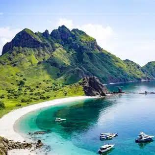

Labuan Bajo
Labuan Bajo merupakan salah satu tempat wisata terkanal yang terletak di bagian timur Indonesia. Keindahan alamnya yang masih terjaga berhasil menarik perhatian banyak pengunjung, baik turis dari dalam maupun luar negeri.
Read More
